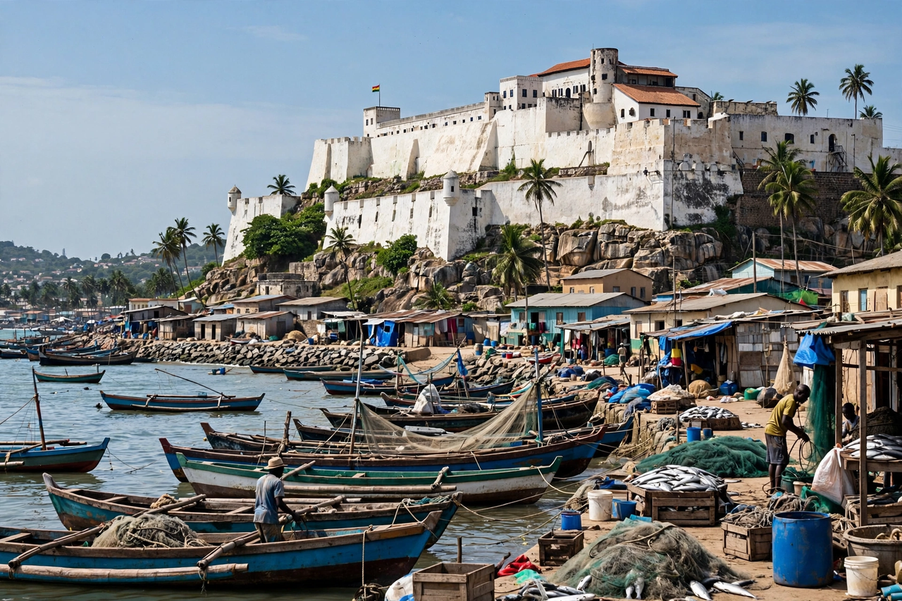

Elmina Castle
From Wikipedia, the free encyclopedia

Elmina Castle (São Jorge da Mina) was built by the Portuguese in 1482 at Elmina, in present-day Ghana — the first European trading post and the oldest European building in sub-Saharan Africa. A centre of the gold trade and later a principal embarkation point of the Atlantic slave trade, it passed to the Dutch (1637) and then the British (1872), and is now a UNESCO World Heritage Site and a place of pilgrimage for the African diaspora.
History
Diogo de Azambuja founded São Jorge da Mina with the permission (under pressure) of the local chief, trading European goods for Akan gold that gave the 'Gold Coast' its name. As the Atlantic slave trade eclipsed gold, the castle's warehouses became dungeons where captives were held before the 'Door of No Return' to the ships — by Dutch West India Company and later British hands, over two and a half centuries.
Memory
Elmina, with nearby Cape Coast Castle, anchors Ghana's slavery-heritage tourism and its 'Year of Return' (2019) diplomacy toward the diaspora. The preservation of the dungeons as shrines — and debates over whitewashing, literal and curatorial, of the site's horror — make it one of the most charged heritage places in Africa.